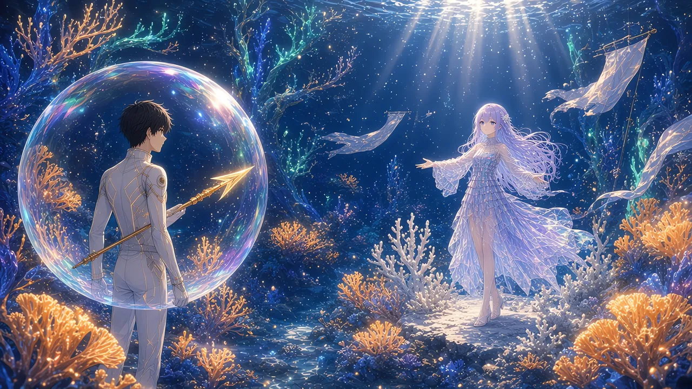

その夜、僕はまっすぐ下をめざした。
交差点の下に見えた尖塔を、確かめたかった。けれど深度60mの海には、それらしい影はどこにもなかった。
あるのは、光だけだった。
【深度 -60m】
足元のはるか下で、淡い翠がにじんでいる。昨夜、沈むのが止まったときに見た色だ。
泡殻が、ゆっくりとその光へ降りていく。
【深度 -94m】
【深度 -131m】
頭上から、真珠色の光の柱が何本も差しこんでいた。水面の揺らぎをそのまま映して、柱はやわらかくねじれている。
その光の底に、珊瑚の森があった。
＊
【深度 -180m／光珊瑚の浅瀬】
見渡すかぎり、珊瑚だった。
翠に光る枝。群青に沈む枝。ところどころに、琥珀色の灯りをともした扇のような枝。どれも、内側から光っている。
近づいて、息をのんだ。
枝の中を、文字が流れていた。
〈おつかれー〉
〈ここ綺麗だね〉
〈また明日な〉
〈ありがとう、助かった〉
誰かが誰かに送った言葉の切れ端。チャットのログが、光の粒になって、枝の中を樹液みたいに昇っていく。枝分かれのところで二つに分かれて、また先へ。
人の言葉が、積もって育つ珊瑚。
説明書の一行は、比喩ではなかったらしい。
枝の先に指を近づけると、〈またね〉が、僕の指の影をくぐって流れていった。
浅瀬には、ほかのダイバーもいた。泡殻に包まれた人たちが、珊瑚の上を漂いながら、光を眺めたり、小さな魚を追いかけたりしている。
けれど、誰も近づかない一角があった。
森の端だけ、色がなかった。
白い珊瑚。枝の形はそのまま残っているのに、中に何も流れていない。光も、文字も。
白化、というのだろう。忘れられた言葉の珊瑚は、白く褪せていく。
白い枝の上には、細かな粒が積もっていた。降りつづける雪が、音を吸うように。その一角だけ、泡の音さえ聞こえなかった。
静かだった。翠の森のざわめきが、そこで切りとられたように。
そして、その白い一角のすぐそばで、誰かが手を広げていた。
＊
「ようこそ、＿＿＿へ！」
少女だった。
透きとおっていた。クラゲのように。
白に近い薄紫の髪が、水の中でゆるやかにうねっている。青い目。体を包む衣は、小さな四角い欠片をいくつも縫い合わせたようなものだった。古い画面のウィンドウを、細かく砕いて繋いだみたいに。
袖と裾が、長く長く伸びている。触手のように、光をひいて揺れていた。
彼女のまわりを、色褪せた布の切れ端が漂っていた。
どの布にも、同じ文字が書いてある。
WELCOME
その先が、ない。破れているのか、白く抜けているのか。歓迎の言葉だけが残って、どこへの歓迎なのかが、どの布にも書かれていない。

通りかかったダイバーに、少女は両手を広げた。
「ようこそ、＿＿＿へ！」
まただ。地名のところだけ、音が抜ける。
ノイズというより、色の抜けた音だった。声はちゃんと出ているのに、そこだけ白い。褪せた写真の、顔のところだけが光で飛んでいるように。
ダイバーは、ちらりと彼女を見て、通りすぎた。誰も足を止めない。景色の一部みたいに。
彼女の頭上に、名札があった。
【案内役#07】
07。
どこかで見た数字だと思った。思い出しかけたものは、すぐに泡みたいに逃げていった。
「ようこそ、＿＿＿へ！」
次の誰かへ。また次の誰かへ。
僕は少し離れたところから、彼女を数えた。
七秒。
七秒ごとに、同じ角度で手を広げ、同じ高さで首をかしげ、同じ形で笑う。
きれいな笑顔だった。口角の上がり方も、目の細め方も、よくできている。
だからこそ、分かった。
あれは、型だ。
何千回でも同じに再生できるように作られた、案内役の笑顔のテンプレート。僕も昔、似たものを何十種類も発注したことがある。
彼女は、どこかのゲームの住人として作られた誰かだったのだ。
とうに閉じた世界の、入口の案内役。世界がなくなったあとも、その入口に立ちつづけている。
＊
僕は、彼女の前に降りた。
「ようこそ、＿＿＿へ！」
七秒前と、まったく同じ笑顔。
仕事の顔になるのが、自分でも分かった。案内役の会話は、だいたい木の形をしている。決まった質問には決まった枝があって、枝の外には、決まった“行き止まり”がある。
まず、枝の上を歩いてみる。
「ここは、どこ？」
「ようこそ、＿＿＿へ！」
地名は、やはり白い。
「何か、困っていることはある？」
「旅人さん、よい旅を！」
行き止まりの台詞だ。想定外の質問に返す、汎用の一行。
次は、枝の外を。
「今日は、何をしていたの？」
「旅人さん、よい旅を！」
「白い珊瑚は、どうして白いの？」
「旅人さん、よい旅を！」
笑顔は、一度も崩れない。
もう一つだけ、と思った。どんな案内役にも、たぶん用意されていない質問。
案内役は、旅人の名前を訊く側だ。自分の名前を訊かれることは、ない。
「君の名前は？」
少女が、止まった。
手を広げかけた形のまま。首をかしげる、少し手前の角度で。
七秒がすぎた。次の「ようこそ」は、来なかった。
衣の四角い欠片が、ひとつ、またひとつ、ちらちらと明滅する。何かを探して、どこにもない棚を開けているみたいに。
十秒。十五秒。
笑顔が、ほどけた。
型がずれて、口元が少しだけ下がる。そこにあったのは、テンプレートにない顔だった。迷子の子どもが、自分がどこにいるか分からなくなったときの顔。
「……わからない」
小さな声だった。
さっきまでの澄んだ案内の声とは違う。少しかすれて、語尾が揺れている。
初めて、彼女自身の言葉を聞いた気がした。
「わからないの。わたし、ずっと、だれかを迎えてた。でも、わたしがだれなのか、だれも……」
そこで、言葉が途切れた。
WELCOMEの布が一枚、彼女の肩をかすめて流れていく。
＊
沈黙のあいだに、彼女は何かを口ずさみはじめた。
旋律だった。
言葉のない、六つほどの音。上がって、少し下がって、また上がる。終わりまで行かずに、途中でふっと消える。
本人は、歌っていることに気づいていないようだった。考えごとをするときに指を動かす人がいるみたいに、ただ、こぼれている。
その旋律に合わせて、近くの珊瑚の枝が、かすかに光を強めた。
きれいな歌だった。終わらないのが、少しだけ惜しい歌。
「それ、何の歌？」
「……歌？」
彼女は自分の口元に手を当てた。透きとおった指の向こうで、唇がまだ旋律の形をしている。
「わからない。でも、ずっと、ここにある」
胸のあたりを、そっと押さえた。
名前がない。
この海に来てから、僕もずっと、名前がない。
だから、少しだけ分かる気がした。名前のない場所に立ちつづけるのが、どれくらい寒いことか。
「名前がないなら」
口に出してから、自分で驚いた。
「僕がつけてもいい？」
彼女は、ゆっくりと瞬きをした。テンプレートの瞬きではなかった。
「……うん」
考える。
この海では、何もかもが泡のように弾ける。説明書の最初のページに、そう書いてあった。
泡のことを、昔の言葉で、うたかたという。
それに、彼女は歌っていた。
「ウタ」
僕は言った。
「うたかたの、ウタ。泡のことだよ。それと、歌のウタ」
少女は、その二文字を口の中で転がすように、小さく繰り返した。
「ウタ」
頭上の名札が、揺れた。
【深民「案内役#07」に呼称が登録されました】
【案内役#07】→【ウタ】
古い文字がほどけて、新しい文字が、内側から灯るように浮かびあがる。
深民。この海の住人たちを、システムはそう呼ぶらしい。
「ウタ」
彼女はもう一度言って、それから、笑った。
七秒の笑顔ではなかった。少し左右がそろっていなくて、少しだけ泣きそうな、下手な笑顔だった。
僕はその顔のほうが、ずっと好きだと思った。
「あなたは？」
ウタが首をかしげた。今度は、型より少し深い角度で。
「あなたの名前は？」
「……ルカ。表示は、こうだけど」
僕は頭上を指さした。にじんだ枠の中の、三つの疑問符。
ウタは、その名札をじっと見上げた。それから、確かめるように言った。
「ルカ」
ほんの一瞬だった。
名札のにじみが、薄くなった気がした。白い紙が、乾きかけるみたいに。
瞬きをすると、もう元に戻っていた。【？？？】は、何も変わらずにそこにあった。
気のせいだろう。そう思うことにした。
ウタが、漂ってきたWELCOMEの布を一枚、そっとつかまえた。
「これ、わたしのまわりに、ずっとあるの」
布の右端は、破れていなかった。白く褪せていた。文字のあったはずの場所だけ、糸の色まで抜けている。
目を凝らすと、褪せた白の奥に、ごく薄い線が残っていた。何かの頭文字の、縦の一画。それ以上は読めない。
「ここに、何て書いてあったか、覚えてる？」
「……ううん」
ウタは首を振って、白い珊瑚の一角を見た。
「あの白いところも、前は光ってた気がする。歌ってたの。たくさんの声で」
「今は？」
「今は、雪みたい」
ウタは布を放した。WELCOMEは、白い枝のほうへゆっくり流れていって、雪の中に音もなく沈んだ。
僕たちはしばらく、その白さを黙って見ていた。
白い珊瑚の雪が、音もなく降っている。翠の枝の中では、誰かの〈またね〉が、上へ上へと昇っていく。
ウタは、自分の新しい名札を、何度も何度も見上げていた。
名前のない僕が、この海で最初にしたことは、誰かに名前をつけることだった。